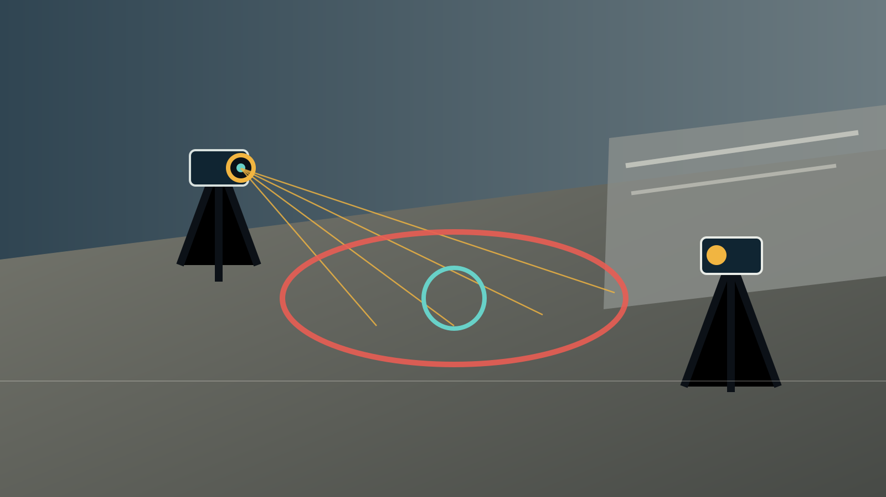
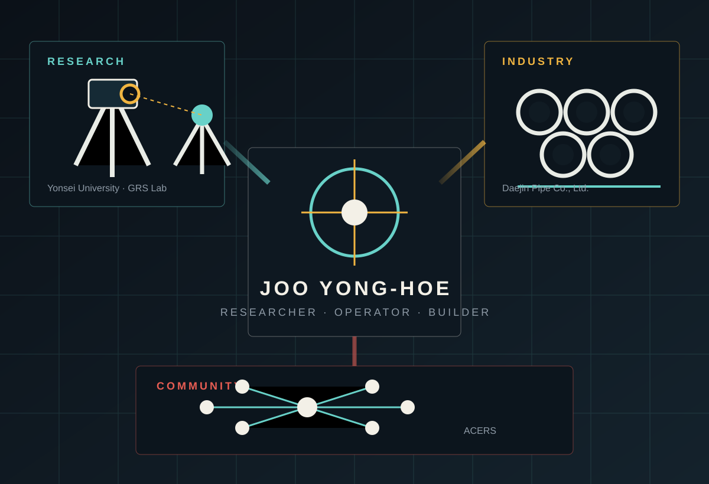

CASE 001 / SPATIAL EVIDENCE
The line is visible. The claim is not yet earned.
An oblique image can suggest a boundary. It cannot certify one on its own.
PUBLIC RECONSTRUCTION
NOT AN EVIDENTIARY FIGURE
ENTER THE EVIDENCE CHAIN
01
THE QUESTION
When does an image become a measurement?
A projected line may look precise, even convincing. But visual agreement does not prove that the line is physically correct.
The work behind JoosAtlas separates what the camera observes from what the field establishes, what the model assumes, and what the audit is allowed to claim.

02
INTERACTIVE / EVIDENCE LENS
Move the lens.
Reveal the missing layer.
Outside the lens: a plausible image boundary.
Inside the lens: independent reference structure.

MOVE POINTER / DRAG ON TOUCH
03
CHAIN OF CUSTODY
A measurement is not a picture. It is a traceable sequence of roles.

01 / DATUM
The field comes first.
A boundary must originate from a physical reference before any image can evaluate it.
04
CLAIM GATE
A system should know when not to speak.
Three conditions must survive before a measurement claim is permitted. Try the gate.
OBSERVATION
WITHHELD
05
FAILURE ATLAS
Failure is not noise around the result. It is part of the result.

FAILURE 01
The feature exists. The image cannot support it.
When the visible structure falls below reliable observation, the correct output is not a number. It is a refusal.
Unverified is not zero.
RESEARCH PRINCIPLE
Do not claim what the measurement chain cannot support.
06
THE PERSON BEHIND THE ATLAS
One person.
Three operating realities.
Research asks whether a claim is defensible. Industry asks whether a system works. Community asks whether knowledge travels. JoosAtlas is built where those questions meet.

JOO YONG-HOE
주용회
Researcher, industrial operator, and builder.
Joo Yong-Hoe is a Ph.D. Candidate at Yonsei University’s Geospatial Information & Remote Sensing Laboratory, President of Daejin Pipe Co., Ltd., and President of ACERS.
His work connects rigorous spatial measurement with real operating environments, turning research questions into auditable methods, clear visual explanations, and deployable tools.
Affiliations are provided for biographical context. JoosAtlas is an independent personal research platform and does not represent the official views of the affiliated organizations.
07
RELEASE LEDGER
What is public.
What remains withheld.
This public experience communicates the research problem, qualitative findings, and evidentiary philosophy without disclosing unpublished implementation details.
VIEW THE PUBLIC REPOSITORY ↗Research questionRELEASED
Qualitative findingsRELEASED
Researcher profileRELEASED
Exact method and equationsWITHHELD
Experimental geometryWITHHELD
Numerical results and dataWITHHELD
Paper statusUNDER REVIEW